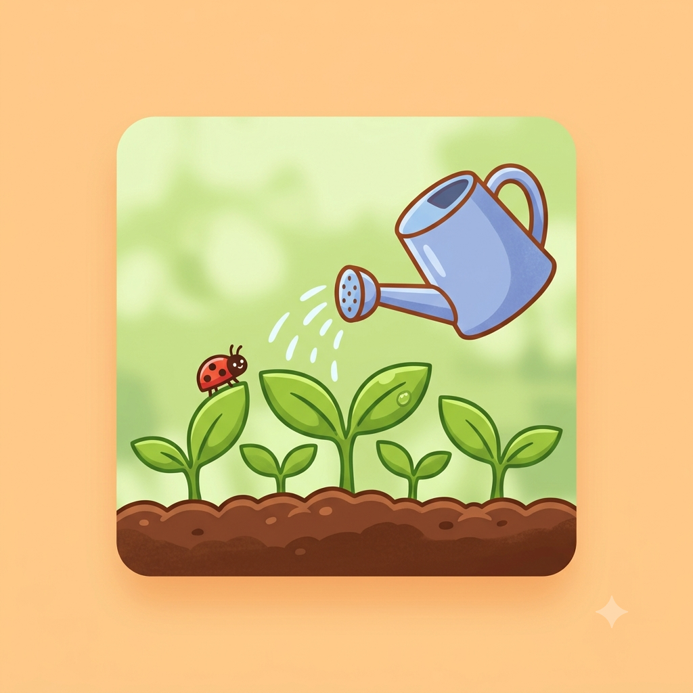

Olá! Este é o meu blog
Por: Maria Eduarda Godoy Santos
Bem-vindos ao meu espaço sobre a Horta do 1ºD!
Criei este blog para guardar um pouco das experiências que vou viver durante as atividades realizadas na horta da nossa escola.
Aqui vou contar o que fizemos, o que achei das atividades e algumas coisas novas que aprender durante o projeto.